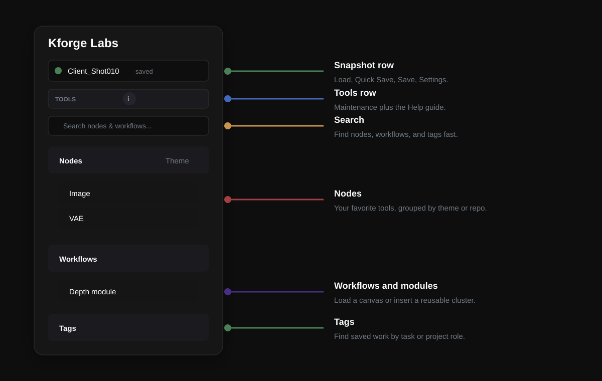
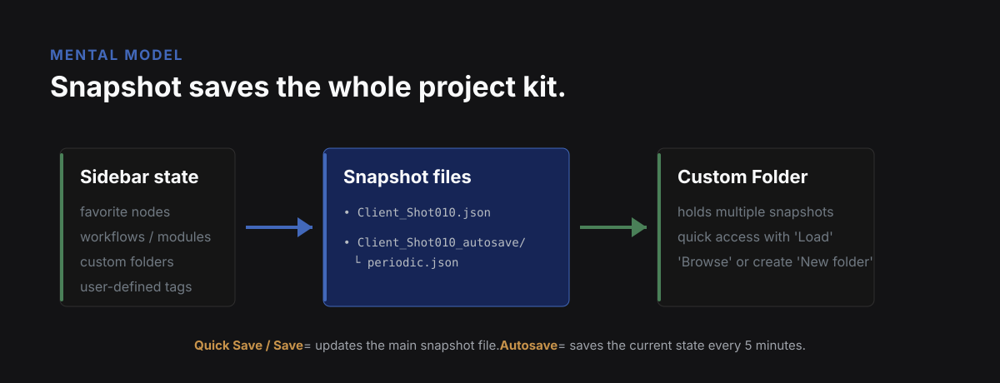
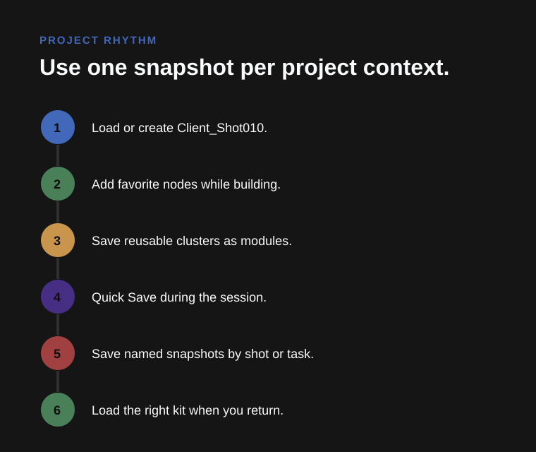
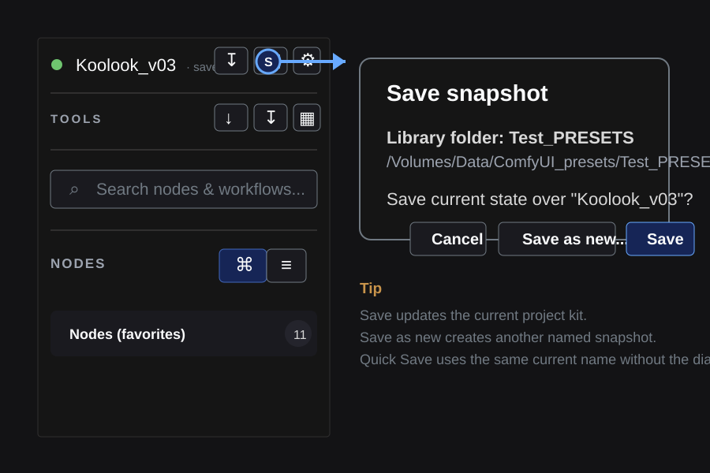
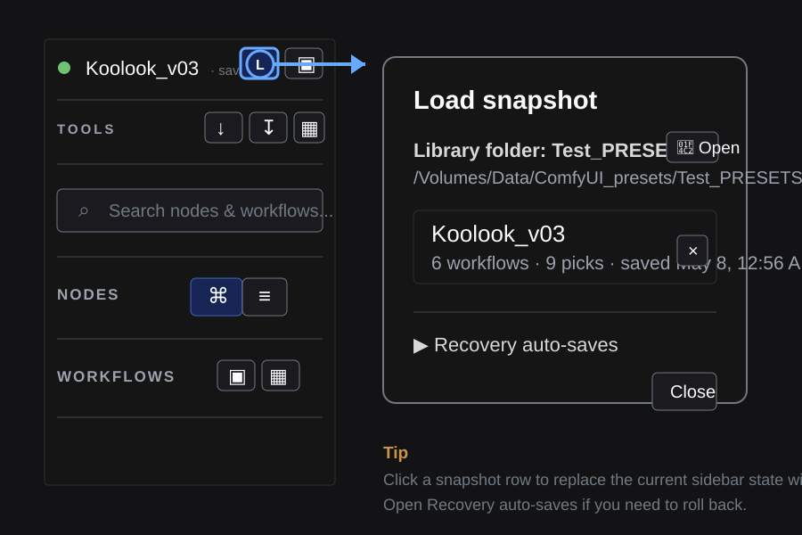
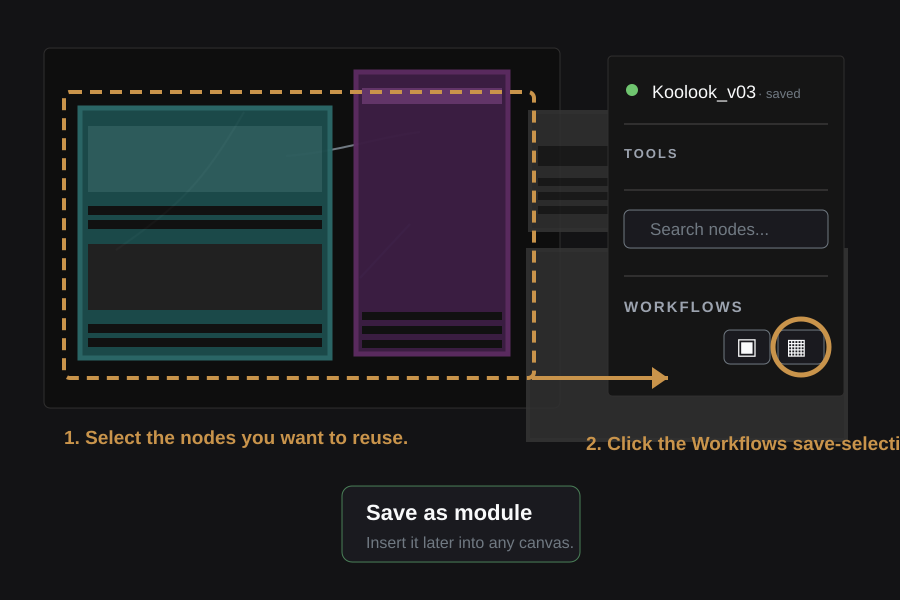
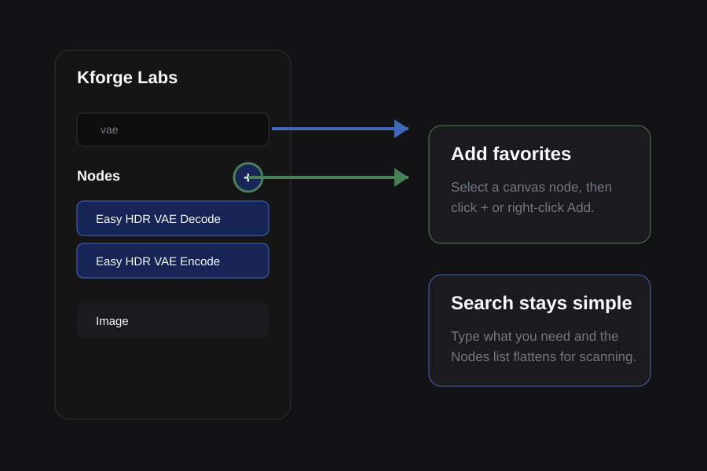
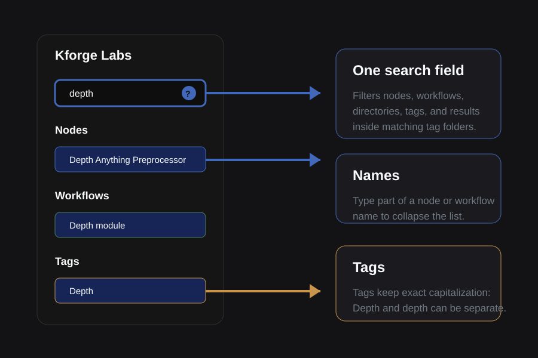
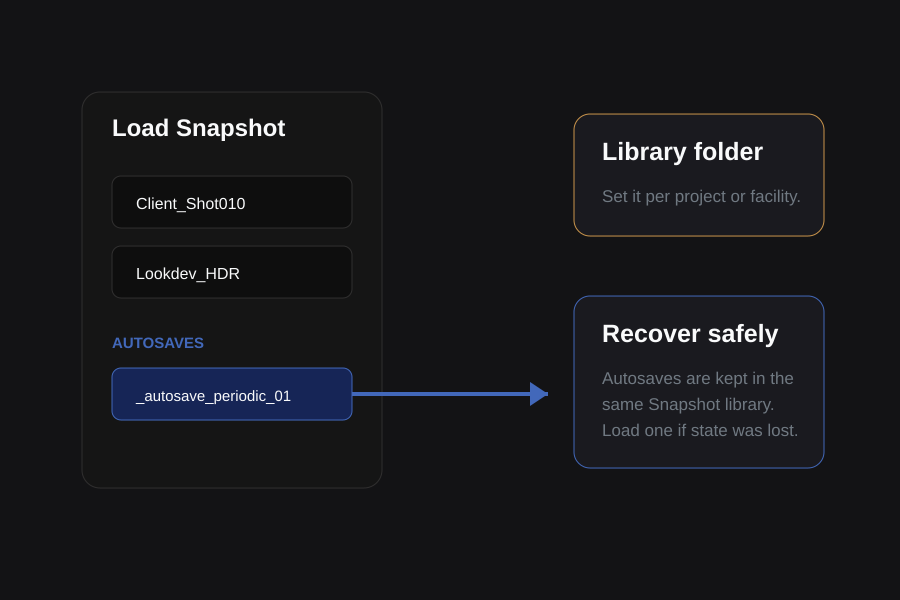

Snapshots
Load, Quick Save, Save, and Settings. This is the main project state layer.
Kforge Labs
Save the nodes, modules, workflows, tags, and snapshot state you need for a project, then load that setup again when the work comes back.
Start here
Snapshots keep the whole kit. Nodes keep favorite tools close. Workflows store full canvases or reusable modules. Tags help you find saved work by task.

Most important idea
A Snapshot saves Kforge Labs state: favorite nodes, saved workflows, modules, tags, archive, and the current sidebar organization. Use one named snapshot per project, shot, client, or experiment.

Project rhythm

Load, Quick Save, Save, and Settings. This is the main project state layer.
Favorites, theme or repository grouping, search, remove, and re-add.
Find nodes and workflows by name, or find saved workflows through their tags. Tag folders preserve case.
Save a whole canvas, save a selection, load a workflow, or insert a module.
Autosaves, install missing packs, starter preset, and library location settings.
Visual recipes





